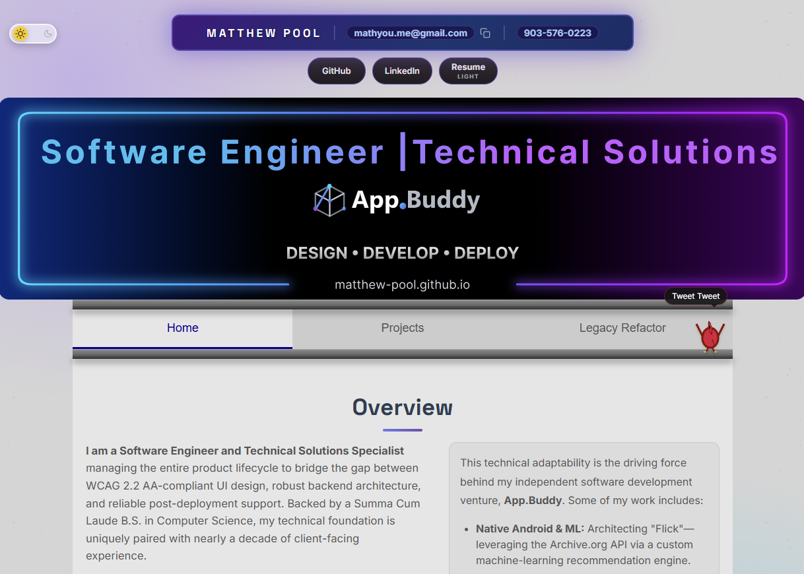
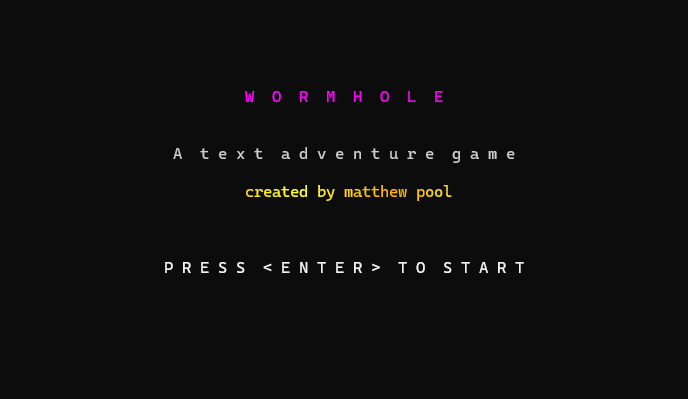
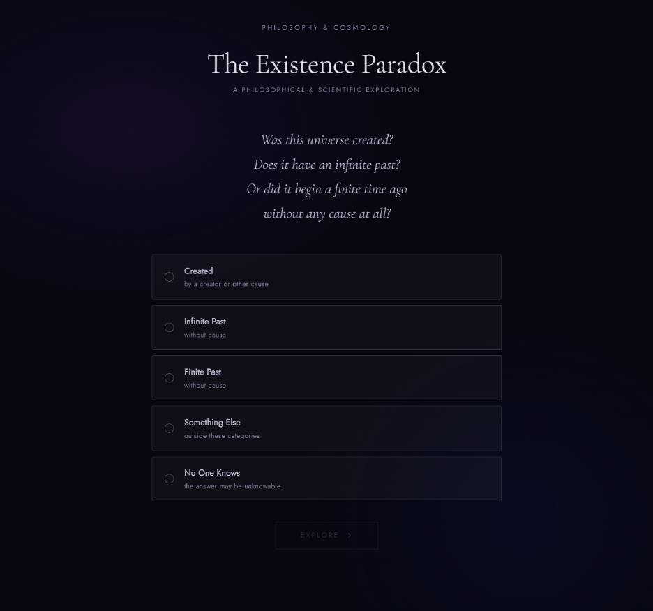

Projects

(This) Portfolio
Fully hand-coded, zero-dependency responsive portfolio featuring a persistent light/dark mode, JS-driven SVG animations, custom modals, and automated CI/CD.

Wormhole - A Text Adventure Game
A terminal-based sci-fi adventure driven by a custom Python OOP engine, featuring event-driven state management and multithreaded asynchronous UI updates.

The Existence Paradox
Interactive React/TypeScript SPA featuring complex state hooks, decision-tree navigation, and a high-fidelity WCAG 2.2 AA-compliant UI.

Super Mario Bros.
3D scene recreation with custom shaders, Phong lighting, and hand-coded meshes

Full-Stack Travel Platform (PoC)
Dual-interface web app with a cloud-secured admin SPA, RESTful APIs, and database migration to AWS DynamoDB via Docker.

Product Design: Eat Right!
Mobile app wireframes and product design documentation including interviews and personas.

Product Design: MoneyMobile
Low-fidelity wireframe and high-fidelity mockup and design proposals for client mobile and admin web apps.

Austin Animal Center Dashboard
Interactive data dashboard with MongoDB integration and geolocation mapping

Machine Learning
Neural networks, deep Q-learning, and Markov decision processes

NASA Climate Data Analysis
Temperature deviation analysis with curved trend line visualization

NBA Statistical Analysis
Regression modeling to predict regular-season wins from team metrics

Economic Analysis
Data visualization and reporting on economic indicators

Database Case Study
MySQL database administration and ERD design

System Design & UML
Comprehensive system design documentation with UML diagrams

Security Audit & Remediation
Financial software vulnerability assessment with OWASP compliance

Agile & Scrum Leadership
Scrum Master (College Experience)

Algorithmic Optimization
Custom merge sort implementation with Big O analysis

Unit Testing
JUnit 5 test suite with comprehensive coverage
The Bottom Line
Agile teams require engineers who understand the entire product lifecycle—not just a small isolated part of a much bigger picture. I can build things end-to-end. I understand business needs and constraints, recently solo-engineering a native Android app with (virtually) unlimited free content available to users at near-zero infrastructure costs.
Drawing on nearly a decade of combined customer solutions experience—including five years as a top 1% B2B/B2C sales agent consistently outperforming pools of 100+ representatives, alongside remote technical support for consumer telecommunications—I never lose sight of the business perspective. I thrive in fast-paced environments, maintaining a relentless focus on first-contact resolution, lasting customer retention, and maximizing business revenue.
I can innovate. I can design. And I know how to manage a product throughout its entire lifecycle—from early Figma wireframes and API integrations to deploying automated CI/CD pipelines—with the user experience and business objectives always top of mind.